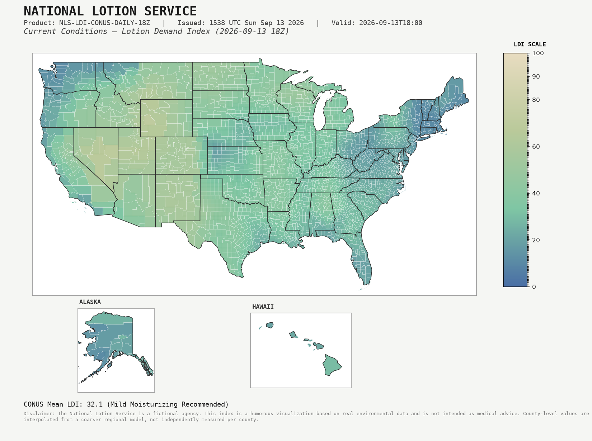
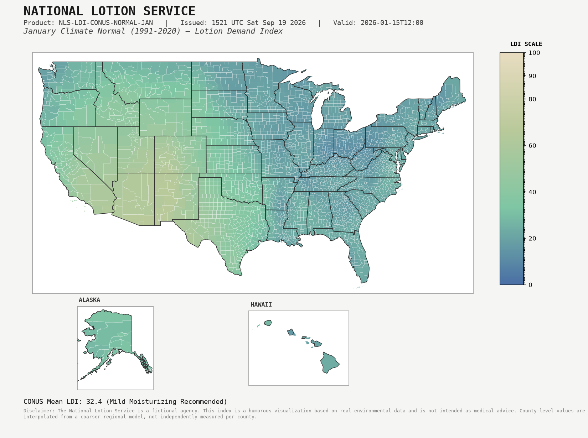

PRODUCT: NLS-LDI-CONUS-DAILY
ISSUED: --
National Lotion Demand Index — 7-Day Analysis & Outlook
Includes 3 days of archived analysis, current conditions, and a 3-day model-based outlook.

County-level detail below. Scroll/pinch to zoom, drag to pan, hover for details.
PRODUCT: NLS-AFD-CONUS
ISSUED: --
Area Forecast Discussion
Loading discussion…
Current Advisories & Statements
- Loading…
Monthly Climate Normals
1991–2020 baseline. Select a month to view its normal Lotion Demand Index pattern.

About the Department of Protected Epidermises
The National Lotion Service is the flagship weather product of the Department of Protected Epidermises (DOPE), a fictional cabinet-level agency dedicated to the earnest, thorough, and entirely unnecessary monitoring of American skin.